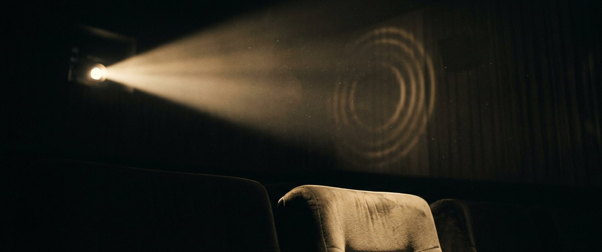

Version 1.0 · 22 octobre 2026 · Port-au-Prince — Paris — Los Angeles Éditeur : RippleXTV Studios · Toute évolution passe par amendement écrit (§10)
Lockup principal — fond sombre. Le logotype est dessiné (monoligne, terminaisons rondes) : ne jamais le recomposer dans une police.
01 · Plateforme de marque
Dans le noir, une lumière se propage.
RippleXTV existe pour qu'aucun plan mémorable ne meure : nous le montrons, nous le nommons, nous le transmettons. Un extrait bien crédité est une onde : elle part d'un film, traverse un écran, et continue dans la mémoire de celui qui le regarde.
Mission
Devenir la référence mondiale du cinéma sur les réseaux sociaux : là où un cinéphile vérifie, découvre et ressent. Pas un compte de clips : une cinémathèque verticale, exigeante sur le crédit, la qualité d'image et le récit.
Vision à 10 ans
2026 : une grille TikTok irréprochable. 2028 : une base de données notée par la communauté (l'Indice Ripple) et des éditions nationales. 2030+ : RippleXTV Originals, notre propre fiction. 2036 : une institution — le réflexe « vérifie sur RippleXTV ».
Valeurs
Nommer. Tout extrait porte son titre, son année, son réalisateur. Sans exception. C'est notre serment de cinémathèque.
Propager. Le cinéma est une onde : chaque contenu doit donner envie de voir l'œuvre, jamais de la consommer par procuration.
Exiger. Une source compressée, un filigrane subi, un spoiler lâché : ça ne sort pas. La qualité est notre politesse envers le cinéma.
Durer. Nous construisons pour 2036 : le système visuel prime l'effet du moment.
Territoire & personnalité
La salle obscure : presque noire, traversée d'une lumière chaude. RippleXTV parle comme un storyteller cadré — le suspense d'un conteur, la rigueur d'un archiviste. Jamais hurleur, jamais snob.
02 · Nom, architecture & signatures
Une marque-mère, des éditions.
La marque est RippleXTV (casses exactes : R-i-p-p-l-e-X-T-V, le X soudé). Elle se déploie en éditions : une par territoire, chacune dans sa langue, toutes sous le même sceau, la même palette, le même système.
Édition
Nom affiché
Identifiant cible
Signature (bio)
Langue
Maison-mère / États-Unis
RippleXTV
@ripplextv (renommage de RippleXTVofficial)
The Cinema.
EN
France
RippleXTV France
@ripplextv.fr (renommage de @ripplextv.france)
Le Ciné.
FR
Haïti
RippleXTV Haïti
@ripplextv.ht
Sinema a.
FR / KRÈYÒL
Règles de nommage (intangibles)
Zéro underscore, zéro « official », zéro casse aléatoire. Un suffixe défensif (« official ») signale une marque qui subit ; une marque de référence occupe son nom, simplement.
Nom affiché toujours : RippleXTV + [Édition] (sauf maison-mère : RippleXTV seul).
Identifiants futurs sur le même modèle : @ripplextv.mx, @ripplextv.br, @ripplextv.sn…
Les signatures de bio sont des phrases nominales minimales dans la langue de l'édition — jamais de slogans longs, jamais d'émojis.
Plan de transition des identifiants
Semaine forte : renommer un identifiant TikTok le jour du lancement d'une franchise majeure, annoncé par une vidéo épinglée (« RippleXTV change de nom, pas de standard »).
Cycle TikTok : un changement d'identifiant par 30 jours → ordre : @ripplextv.fr d'abord, @ripplextv.ht ensuite, @ripplextv dès disponibilité.
Pendant 60 jours : bio de chaque édition = « Ancien nom : … » pour ne perdre aucun abonné, puis retrait.
Domaine : déposer ripplextv.com (et .fr / .ht) — le lien ko-fi au nom personnel disparaît de la bio au profit du domaine de marque.
Phrase-manifeste (hors logo)
FR : « Chaque plan envoie une onde. » · EN : “Every frame sends a ripple.” · KRÈYÒL : « Chak plan voye yon onn. » Usage : manifestes, intros vidéo, pieds de page, dossiers de presse. Jamais dans le logo.
03 · Logo — le Sceau & le Logotype
Le R-Onde.
Le sceau est un R monoligne dont la jambe se prolonge en ondulation, suivi de deux arcs concentriques : le plan part du film, l'onde se propage. L'arc externe, plus fin et plus sombre, dit la dissipation de l'onde — le geste signature de la marque. Tout est tracé au trait rond : lisible à 24 px, brodable, gravable, valable en 2036.
Le Sceau — avatar, app icon, sting
Lockup principal — fond sombre
Lockup fond clair (presse, dossiers)
Filigrane vidéo — ivoire 80 %, coin haut droit
Construction & règles
Géométrie : trait monoligne, terminaisons et angles ronds ; hampe du R = 64 unités, bol = demi-cercle r16, jambe = ondulation à deux inflexions ; arcs de propagation r30 et r44 centrés sur le bol. Épaisseur du trait = 20 % de la hauteur de capitale (v1.1) : le sceau doit peser en avatar 100 px — imposant, jamais lourd.
Espace de protection : un carré vide égal à 40 % de la hauteur du sceau, sur les quatre côtés.
Tailles minimales : sceau 24 px / 8 mm ; lockup 120 px / 40 mm ; filigrane 8 % de la largeur vidéo.
Avatar social : toujours le Sceau sur Noir Salle (ripplextv-avatar-1080.png). Jamais un photogramme, jamais un visage : dans un fil, l'avatar doit être un tampon, pas une image de plus.
Sur photographie : uniquement derrière un voile Noir Salle ≥ 60 % ou dans une zone uniformément sombre.
Interdits
✓ Monochromie ivoire ou noire autorisée (gravure, tampon, broderie).
✓ Arcs seuls autorisés comme motif graphique (fonds, transitions, puces de liste).
✗ Recomposer le logotype dans une police de caractères.
✗ Changer les couleurs hors palette nominative (§04).
✗ Sceau sur fond blanc en contexte social (l'avatar reste noir).
04 · Couleurs
L'Or Ripple, sur Noir Salle.
Le jaune est pris deux fois (AlloCiné, IMDb) : nous ne serons pas le troisième jaune. Le rouge vif est pris (Netflix), le vert (Letterboxd), le noir-blanc austère (Criterion, MUBI). RippleXTV possède l'or chaud du faisceau de projection — un laiton champagne, pas un citron — posé sur le noir de la salle. C'est la couleur de la lumière qui traverse l'obscurité : celle du projecteur, celle des récompenses, celle qui dure depuis un siècle de cinéma.
NOIR 70
IVOIRE 20
OR 10
Ratio 70-20-10 sur tout support. À l'écran, le fond noir est déjà celui de TikTok : nous fusionnons avec la salle, l'or et l'ivoire font le reste.
Noir Salle
#0B0B0E · RVB 11/11/14
Fonds, avatar, voile de cartouche. 70 %.
Ivoire Écran
#F2EDE3 · RVB 242/237/227
Texte courant, logotype sur noir. 20 %.
Or Ripple
#C9A24B · RVB 201/162/75
LA couleur de marque : filets, sceau, labels, Indice. 10 %.
Or Lumière
#E6C87F
Hauts de lumière, italiques soulignés, hover.
Or Profond
#7E6429
Arc externe du sceau, ombres de l'or.
Noir Bobine
#15151A
Surfaces, cartes, panneaux sur fond noir.
Gris Projecteur
#9A9AA2
Texte secondaire, crédits, métadonnées.
Rouge Velours
#7E1F2B
Usage unique : badge SPOILER & alertes. Jamais ailleurs.
Usages normatifs
Texte sur noir : Ivoire Écran. Texte secondaire : Gris Projecteur. Jamais de blanc pur (#FFF).
Or Ripple : filets, bordures de cartouche, labels de rubrique, sceau, Indice Ripple, mots soulignés. Jamais en fond de paragraphe, jamais en texte corps < 14 px.
Dégradés : interdits hors du voile vertical de cartouche (noir → transparent).

Univers visuel de référence — « Dans le noir, une lumière se propage. » Cette image est l'étalon d'ambiance : toute photographie de marque (bannières, presses, dossiers) doit tenir dans ce cadre lumineux.
05 · Typographie
Bodoni Moda & Archivo.
Une didone (Bodoni Moda) pour la voix éditoriale — la typographie historique des affiches de cinéma, contrastée, prestigieuse — et une grotesque (Archivo) pour tout ce qui est information : cartouches, crédits, interfaces. Le couple couvre l'affiche et la base de données : exactement ce qu'est RippleXTV.
Le plan est une onde : il traverse l'écran et continue en vous.
ARCHIVO — CAPITALES ESPACÉES 12 % POUR CARTOUCHES ET LABELS · Archivo regular pour les légendes, commentaires et textes longs. Le logotype, lui, est dessiné : aucune police ne le remplace.
Hiérarchie type (vidéo & web)
Niveau
Police
Style
Usage
Accroche
Bodoni Moda
Italique, 600, ~7 % de la hauteur vidéo
Phrase narrative ≤ 6 mots, centre-haut
Label rubrique
Archivo
Capitales 800, approche +22 %
Coin haut gauche, Or Ripple
Cartouche titre
Archivo
Capitales 800, approche +14 %
Titre VO de l'œuvre
Crédits
Archivo
Capitales 500, approche +10 %, Gris Projecteur
Année — réalisateur · titre VF en Bodoni italique
Texte courant
Archivo
Regular 400
Légendes, descriptions, site
Le Cartouche — signature éditoriale
Tout extrait porte son cartouche, en bas à gauche, sur voile noir, filet Or Ripple à gauche. C'est notre serment de cinémathèque et notre signature visuelle : aucun compte de clips ne le fait.
The Godfather
Le Parrain
1972 — Francis Ford Coppola
Titre en version originale toujours premier ; titre VF (ou local) en italique Bodoni ; année — réalisateur en capitales Archivo. Si l'œuvre n'a qu'un titre : deux lignes seulement.
06 · Système visuel des extraits
Un gabarit, une collection.
Une grille premium n'est pas une somme de vignettes : c'est une collection. Chaque extrait 9:16 applique le même gabarit ; seul le photogramme change. Effet recherché : en faisant défiler, l'œil reconnaît RippleXTV avant de lire un seul mot.
L'Extrait
Tout semblait innocent… jusqu'à ce que tout bascule.
The Godfather
1972 — Francis Ford Coppola
Gabarit 9:16. Label rubrique en haut à gauche (sous la barre TikTok) · accroche Bodoni italique entre 30 % et 45 % de hauteur · cartouche en bas à gauche, au-dessus de la zone de légende TikTok (≈ 18 % bas) · filigrane ivoire en haut à droite, 8 % de largeur. La colonne droite (boutons TikTok) reste toujours vide de tout texte.
L'Extrait
Noces de Cendre
2026 — RippleXTV Originals
La Séance
In the Mood for Love
2000 — Wong Kar-wai
L'Extrait
Portrait de la jeune fille en feu
2019 — Céline Sciamma
L'Onde
Dune: Part Three
Annonce — Legendary
La Séance
Mulholland Dr.
2001 — David Lynch
L'Extrait
The Godfather
1972 — F. F. Coppola
Effet collection. Même emplacement du label, même cartouche, même gradation : la grille devient une vitrine de cinémathèque. Les photogrammes (ici figurés) restent les seules variables.
Interdit : filtres colorés saturés, HDR criard, netteté artificielle, recadrage qui coupe les visages au menton.
07 · L'Indice Ripple
Notre note : des ondes, pas des étoiles.
Toute référence possède sa mesure (étoiles, tomates, notes /10). La nôtre est dans notre nom : une œuvre appréciée fait des ondes. L'Indice Ripple se note de 1 à 5 ondes, le glyphe étant l'arc de propagation du sceau.
4 ondes — « ça propage »
Échelle : 1 onde « ça s'arrête là » · 2 « ça frémit » · 3 « ça porte » · 4 « ça propage » · 5 « ça traversera le temps ».
Usage : réservé à La Séance (analyse) et, plus tard, à la base de données communautaire. Jamais sur un simple extrait : on ne note pas ce qu'on n'a pas analysé.
Indépendance : l'Indice n'est jamais négociable, jamais sponsorisé. Un partenariat se signale, la note reste entière.
Œuvres originales (ex. Noces de Cendre) · label propre : sceau + « Originals » · carton de début et de fin
Ton : le storyteller cadré
Oui : accroches narratives suspendues (« Tout semblait innocent… »), verbes précis, noms propres, chiffres exacts, silences assumés, tutoiement rare et jamais complice-forcé.
Non :CHOC · INCROYABLE · TU NE DEVINERAS JAMAIS · 😱 · « ce détail va te choquer », points d'exclamation multiples, fautes volontaires, majuscules hurlées.
Règle d'or : le suspense sert le film, jamais le clic. Si l'accroche promet plus que l'extrait, on la coupe.
Politiques intangibles
Spoilers : aucune révélation dans une accroche ni dans les 10 premières secondes. Une analyse qui spoile porte le badge SPOILER (Rouge Velours) dès la première image.
Sources : master ≥ 1080p, aucun cam, aucun rip compressé, aucun filigrane extérieur subi. Sinon, l'extrait ne sort pas — même viral potentiel.
Renforcement optique du trait : monoline portée de 14 % à 20 % de la capitale (sceau, logotype, filigrane), ondulation du R amplifiée pour rester lisible en trait épais, arcs de propagation repris (r30 / r44) et épaissis. Motif : lisibilité et autorité en avatar social.
Feuille de route décennale
2026-2027 — La grille : gabarit appliqué à 100 % des publications · renommages d'identifiants · avatar Sceau sur les trois éditions · listes de lecture renommées selon les rubriques.
2027-2028 — La référence : ripplextv.com (base de données, Indice Ripple communautaire) · sting vidéo 2 s (le sceau se trace, l'onde se propage, une note grave + ripple sonore) · kit presse.
2029-2032 — L' studio : RippleXTV Originals en saisons · éditions nationales supplémentaires · événements « Séances » en salle.
2032-2036 — L'institution : application, curation partenaire, archive — le sceau n'aura pas changé d'un trait.